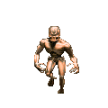

WELCOME TO MY WEBSITE!
This is the landing page. The page of landing, if you will.
QUICK INFO: All links to external sites will open in a new tab by default. Dates are in aus format (dd/mm/yy). There is alt text for all images and gifs, let me know if it works or not if you have a screen reader, can also send an email (see footer) if you want a copy of the alt text.
what's new?
15.8.24 Thu Lots of new stuff.
3.7.24 Sat misc- new entry
9.7.24 Tue: art - new entry (PLUS PICTURES) | reading - new entry | music - new entry (PLUS PICTURE AND VIDEOS)
21.6.24 Fri: studies- new entry | film- new entry
20.6.24 Thurs: studies- new entry
19.6.24 Wed: studies- new entry | music- new entry
18.6.24 Tue: art- new entry
introduction
HEY ALL! Welcome to my totaltly awesome website. Hopefully you'll find something somewhat interesting or amusing here. I'm using this place to put down my thoughts on things like video games, music, as well as just my life, which is definitely very interesting. Well, I told a lie. It really isn't.
Go to the nav bar up top to begin your rad journey. The bulk of the stuff on the website can be found under "interests" - music, art, film, books...
A bit about me before you dive into the website proper? Sure. I'm 16. I live in Australia, Victoria and I am a big fan of a lot of stuff.
I wear glasses (which never fail to slide down my nose or just straight up off my face) and I do not look just like buddy holly. One of the best places in the world is the library , where I spend a substantial amount of time studying. I find it's good because there aren't many distractions - that is, unless the kids next to you decide to have a gossip the whole time. Or even better, some kid is being an absolute pain in the rectum about some ridiculous show he watched and can't stop talking about to his clearly exhausted tutor...
Yeah, yeah, I know I don't *own* the library, it's not my private billionaire yacht, but come on, cut a man some slack. How are you supposed to study and ace your vce when you've got the most asinine noise coming at you from all directions like all the kids running out the classroom in junior school while Mrs Fucklebottom runs trying to get those inconsiderate pricks to wear sunscreen for once, or a hat, or anything so their fucking skin doesn't fall off when they're 50. But of course they don't because they'd rather get kid-drunk swallowing sand from the sand (read: piss and shit infected) pit. But I digress.
I am not a hundred percent sure about what I want to do in the future. I'd consider web dev, but I mean, just take a look at this website and you tell me if that's a very bright idea. I've also considered audio engineering, but it does involve talking to people, so... hard sell.